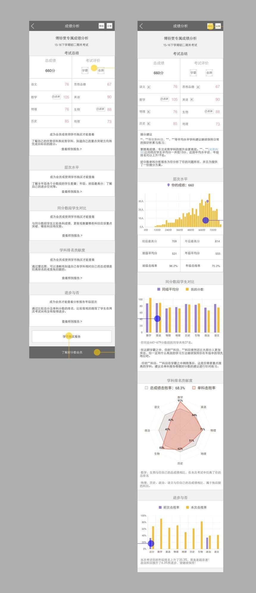
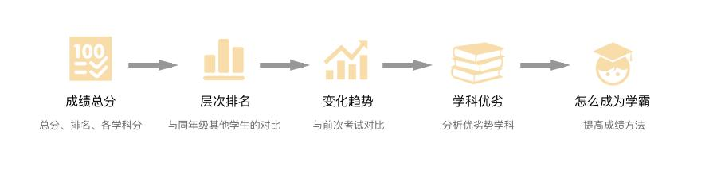
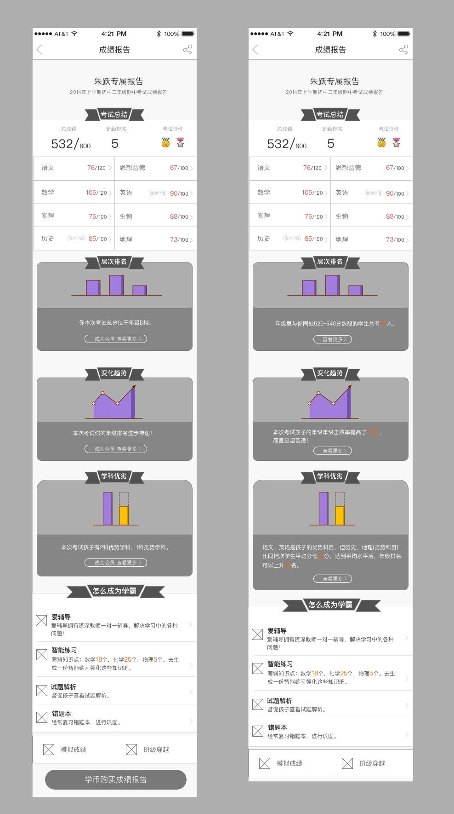
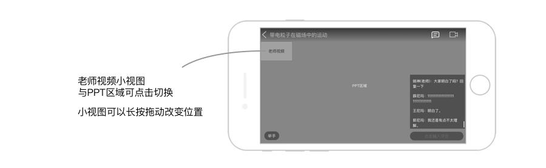
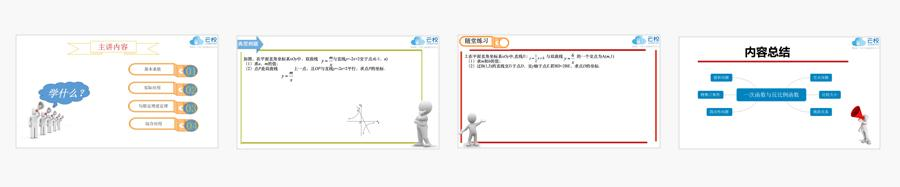
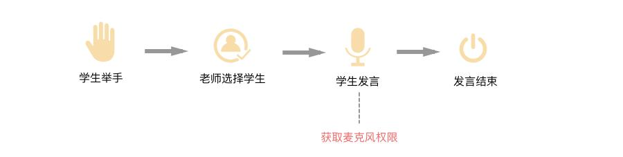
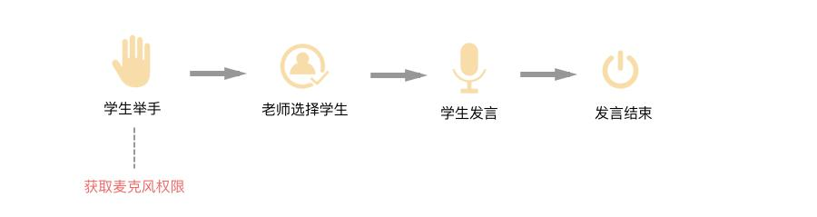

好分数APP改版设计
云校是以阅卷系统为基础，收集分析考试数据，然后通过好分数APP为学生提供考试查分分析服务，并拟定出定制化的提分辅导教育计划。
好分数APP，目前有四百多万的用户，我参与了四个版本的迭代。其中两个小迭代：一次添加小功能，一次是与web端统一字段。两次大版本迭代：成绩分析的信息重构，辅导课程直播。
成绩分析模块的信息重构
通过一线业务人员的反馈，以及用户在QQ群内的抱怨，主要功能成绩报告信息展示有很大问题。数据上也验证这一点，16~17上学期期中考试高峰期10天内首页的成绩报告入口点击率平均为279.53%，页面停留时长为6秒，基本是进去后扫一眼就退出的状态。
问题分析：成绩报告里的详细分析数据只对会员可见，旧版本里，是直接把所有数据展示出来，这样看上去是很专业，但是对用户来说，满屏的数据表是难以理解接受的。非会员会显示一个数据分析例子的入口，而且占据的是很重要的位置，这样的信息展示意义不是很大。

解决：通过与学生及家长的交流，设计出符合他们习惯和心理的信息展示流程：考试总结（总分、排名、各学科分）—层次排名（与同年级其他学生的对比）—变化趋势（与前次考试对比）—学科优劣（分析优劣势学科）—怎么成为学霸（提高成绩方法）

把数据分模块，最重要的信息数据以卡片的形式展示出来，详细数据分析用临时视图的方式展示。会员与非会员，在形式上统一，展示内容区别。非会员在卡片上只展示模糊的结果，不展示数字，会员在卡片展示出重要数字数据。

上线后正好碰到学校的期末考试高峰，数据上成绩报告入口点击率为301.12%，提升了20%左右，页面停留时长也增加到了11秒。用户群家长学生的反馈也验证了这一点。
直播课
与其他娱乐性质的直播不同，课程直播过程中需要放PPT以及老师点学生发言。
1、PPT与老师视频小视图问题（跨部门协调，权衡）
直播时播放PPT，加上老师视频（老师可能会使用纸或白板来配合讲课），就相当于有两个视图。老师在上课过程中大多数时间讲PPT内容，偶尔会在纸或白板上写写画画。所以默认PPT放大显示，老师视频只以很小的区域显示在屏幕中，相互可以点击切换。为了避免老师视频遮住PPT内容，希望小视图是可以随意拖动。

看起来是很好的方案，但是在与开发沟通后，得到反馈，所有交互都可以实现，只是在时间计划内小视图随意拖动基本无望。所以马上修改方案，小视图必须固定位置，而放在哪又是一个问题。需要尽量避开PPT的内容区，减小遮挡住内容的几率。经过与教研团队沟通，发现他们的PPT是这样的通用结构：

主要内容都是聚集在上部、中部，或者靠右，基本没有在左下角放内容。
经权衡后，很快得出更加合适的方案，小视图固定在左下角。
2、发言功能问题（细节，课程流畅性）
老师点学生发言这个小功能点流程是这样：（老师提问）学生举手-老师后台通过-学生发言-老师或学生关闭发言。这里有个问题，学生发言需要获取设备的麦克风权限，应该在哪个阶段获取，一个很小的问题也是要经过思考的。我提供了两个方案：
a，在学生发言时获取权限，被允许发言的同学收到系统弹窗，允许则开始发言，拒绝则发言失败。

在需要用到功能时获取相应权限是恨常规做法。而且在通过举手行为被选中发言时，加上老师的语言（请XX同学发言），心理上更容易接受获取权限的要求。缺点：一旦学生拒绝了权限，发言失败，老师就需要选择其他学生，消耗一些时间。
b，在点击举手时就获取权限，用户允许则举手成功，拒绝权限则举手失败。老师选择学生后就可以直接发言。

在流程一开始就获取权限，之后的流程就会很顺利。缺点：举手操作时没有到发言的阶段，此时获取权限没有足够的刺激让用户允许，一开始就会流失掉一部分人使用此功能。
经过对比两个方案，考虑到我们每次直播课时长为40分钟，为了保证整个课程的流畅性，选择了第二种方案。
经过几个而版本的迭代，好分数APP的体验以及服务提升了很多，这都是团队一起努力的结果。我个人也在与大家的工作中提高了很多，对信息的组织、用户习惯和心理的把握、功能使用流畅性等等，都积累了一些经验。